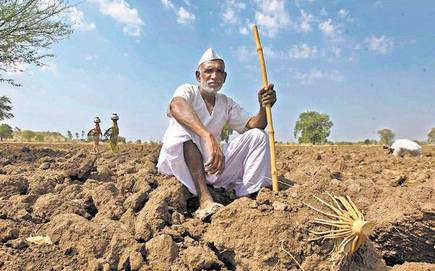
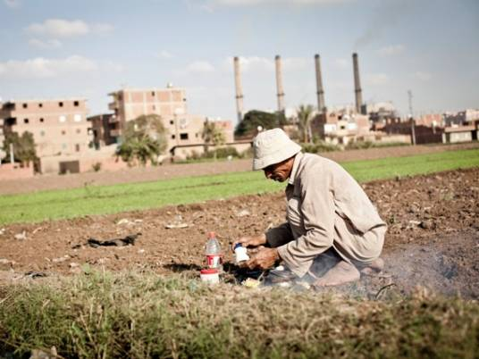
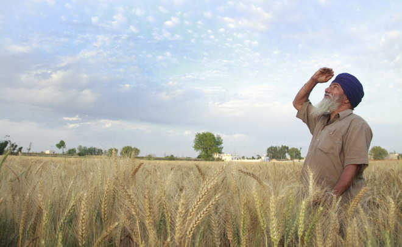
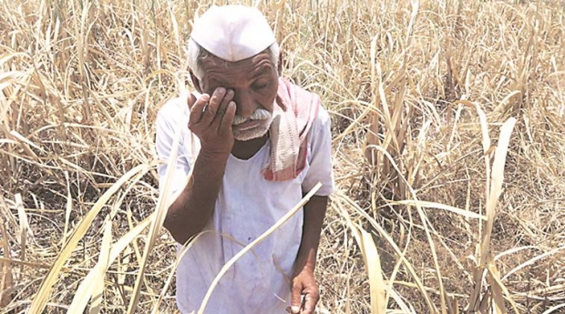
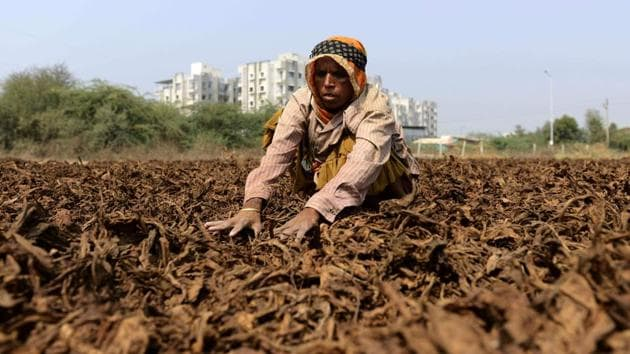
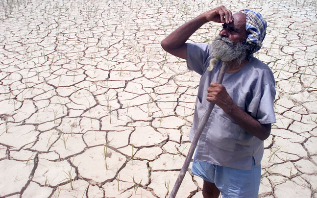
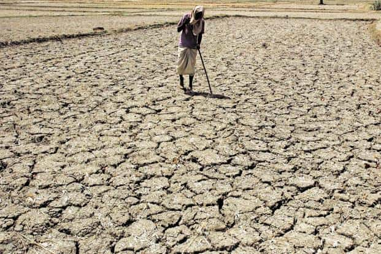

*Hastiram Bhole a farmer of jharkhand has lost his family and livelihood to COVID-19 , with no knowledge of what equipment to use , such websites can help him to get back on his feet*
See what he has to say
FarmEasy is here
Farmers can still have hope , FarmEasy is here to help
All of us eat fruits and vegetables , but how many of us atually know about the plight of people who grow such crops . There are approximately 500 million people engaged in farming , yet how many of them actually have the right knowledge and equipment . Thus farmeasy is here to help . Farmers have the liberty to choose between a large variety of farming equipment with the appropriate prices and specs . No need to worry now , FarmEasy is here to make farming easy and fun , Now enjoy shopping !!
Wait Wait Wait.....before you shop we request you to understand and have a look at the plight of farmers in India

10,281 farmers commited suicide in 2019

Over 20% of our farmers live below the poverty line

30 per cent of marginal and small farmers are still illiterate

68 per cent farmers have incurred major debt for purchase of farm inputs

Only 19% of our farmers use modern machinery

82% farmers have infertile land

With all of that said , our farmers need serious help